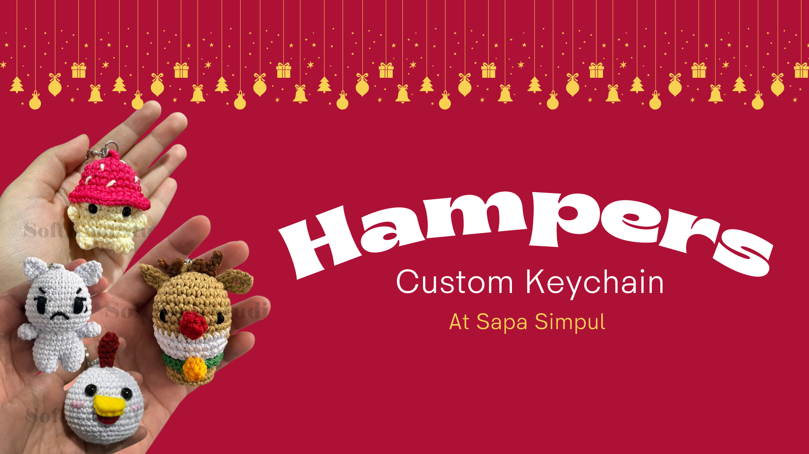

Ide Hampers Natal Unik: Sentuhan Personal dengan Keychain Custom Rajut
Mendekati penghujung tahun, momen berbagi kasih menjadi hal yang paling dinantikan. Apakah Anda sedang mencari hampers natal keychain custom yang unik dan berkesan? Di tengah maraknya hadiah pabrikan yang diproduksi secara massal, memberikan sesuatu yang bersifat handmade atau buatan tangan kini menjadi tren yang sangat digemari. Hal ini dikarenakan nilai estetik, kehangatan, dan sisi personal yang tidak bisa ditemukan pada barang cetakan mesin.
Memilih hadiah yang tepat seringkali menjadi tantangan tersendiri. Namun, ide hampers natal unik yang berbasis kerajinan tangan seperti rajutan (amigurumi) menawarkan solusi yang sempurna untuk menyampaikan pesan kasih sayang yang tulus kepada teman, keluarga, maupun rekan kerja.
Mengapa Memilih Keychain Custom untuk Hampers Natal?
Memilih hampers natal keychain custom adalah cara terbaik untuk menunjukkan bahwa Anda peduli secara detail kepada penerima kado. Produk rajut memiliki tekstur yang lembut dan karakter yang menggemaskan, sangat cocok dengan suasana Natal yang penuh kedamaian dan kehangatan keluarga.
Beberapa keunggulan menjadikannya pilihan utama adalah:
1. Desain Eksklusif dan Personal
Anda tidak terbatas pada model yang ada di toko. Anda bisa memesan karakter khusus seperti rusa Christmas yang ikonik, boneka beruang dengan aksesori musim dingin, hingga karakter ekspresif seperti angrydoll.
2. Daya Tahan Tinggi
Berbeda dengan hampers makanan yang memiliki masa kedaluwarsa singkat, gantungan kunci rajut berkualitas tinggi akan terus menemani tas atau kunci si penerima dalam jangka waktu yang sangat lama sebagai kenang-kenangan.
3. Harga Terjangkau namun Mewah
Meski terlihat mewah dan eksklusif karena proses pembuatannya yang rumit, produk ini tetap ramah di kantong. Di Sapa Simpul, koleksi kami tersedia dengan kisaran harga mulai dari 10rb hingga 25rb rupiah saja.
4. Mendukung UMKM Lokal
Dengan memilih kado rajut handmade, Anda juga turut berkontribusi dalam mendukung industri kreatif lokal.
Rekomendasi Karakter Keychain Custom Terpopuler
Untuk mengisi hampers natal keychain custom Anda agar terlihat lebih menarik dan variatif, ada berbagai pilihan karakter yang menjadi favorit pelanggan. Karakter Rusa Christmas (Rudolph) dengan hidung merah khasnya merupakan pilihan paling ikonik karena sangat relevan dengan suasana Natal dan selalu sukses membawa keceriaan bagi penerimanya. Selain itu, ada pula Chicken Keychain yang memiliki bentuk bulat menggemaskan serta Angrydoll Rajut yang memberikan kesan unik dan sedikit humor, sehingga sangat cocok untuk diberikan kepada sahabat atau rekan kerja yang menyukai barang-barang ekspresif. Jika Anda menyukai konsep hampers yang lebih alami, karakter bertema sayuran seperti Mushroom dan Carrot rajut bisa menjadi pilihan tepat untuk menambah kesan estetik dan hangat dalam kotak kado Anda.
Hadiah Berkesan untuk Orang Tersayang
Menyusun ide hampers natal unik tidak hanya soal memilih barang, tetapi juga tentang bagaimana Anda merangkai cerita di baliknya untuk menciptakan kado yang tulus dan berkesan. Setiap simpul rajutan pada hampers natal keychain custom dikerjakan dengan penuh ketelitian, sehingga Anda perlu memadukannya dengan kemasan yang estetik, seperti kotak kayu atau karton tebal yang didekorasi pita merah dan hijau khas Natal. Untuk memberikan kesan yang lebih intim, jangan lupa menyertakan kartu ucapan yang ditulis tangan secara personal serta menambahkan ornamen tambahan seperti bunga kering atau potongan kertas serut (shredded paper) di dalam kotak agar tampilan hampers terlihat lebih penuh dan premium. Dengan perpaduan antara kerajinan tangan yang detail dan pengemasan yang cantik, kado Natal Anda akan menjadi sesuatu yang tak terlupakan bagi orang tersayang.
Segera siapkan kado akhir tahun Anda! Jadikan momen Natal tahun ini lebih berwarna dan penuh kesan dengan sentuhan kado rajut yang spesial. Kunjungi katalog kami untuk menemukan berbagai pilihan hampers natal keychain custom yang dapat disesuaikan dengan keinginan Anda.